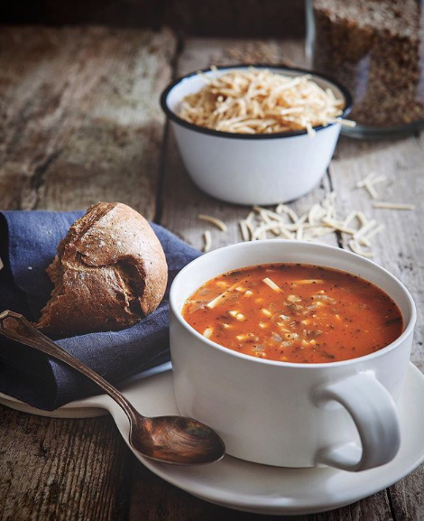

Buzlukta haslanmis nohut varsa bu aksama bu çorbayi yapmanizi mutlaka mutlaka tavsiye ederim! Ben yine iftar misafirlerimize yaptim ilk olarak, cok cok lezzetli oldu. Tarif @Lokma Dergisi Ocak 2016 “Türkiye’nin Çorbalari” sayisindan. Ben siyez unu ve siyez eristesiyle yaptim. Nohutlarim da onceden pismis oldugu icin mercimeklerle beraber ekledim.
Tencereye sogan ve tereyagini alip sotelemeye baslayin. Soganlar solunca salçayi ilave edin, kokusu çikinca üzerini örtecek kadar sicak su ekleyin. Nohutlari ilave edip pismeye birakin. Nohutlarin pismesine yakin yesil mercimek ve eristeyi ilave edin. Unu ayri bir yerde sulandirip baharatlarla çorbaya ekleyin ve tuzunu ayarlayin. Eriste ve mercimekler yumusayincaya kadar pisirin.